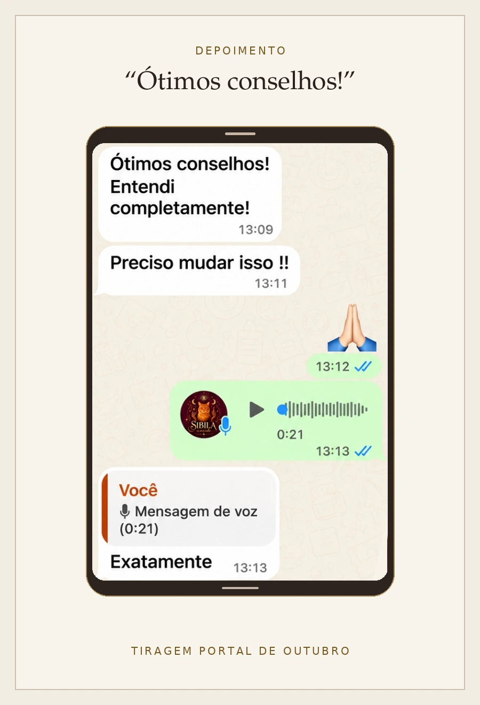
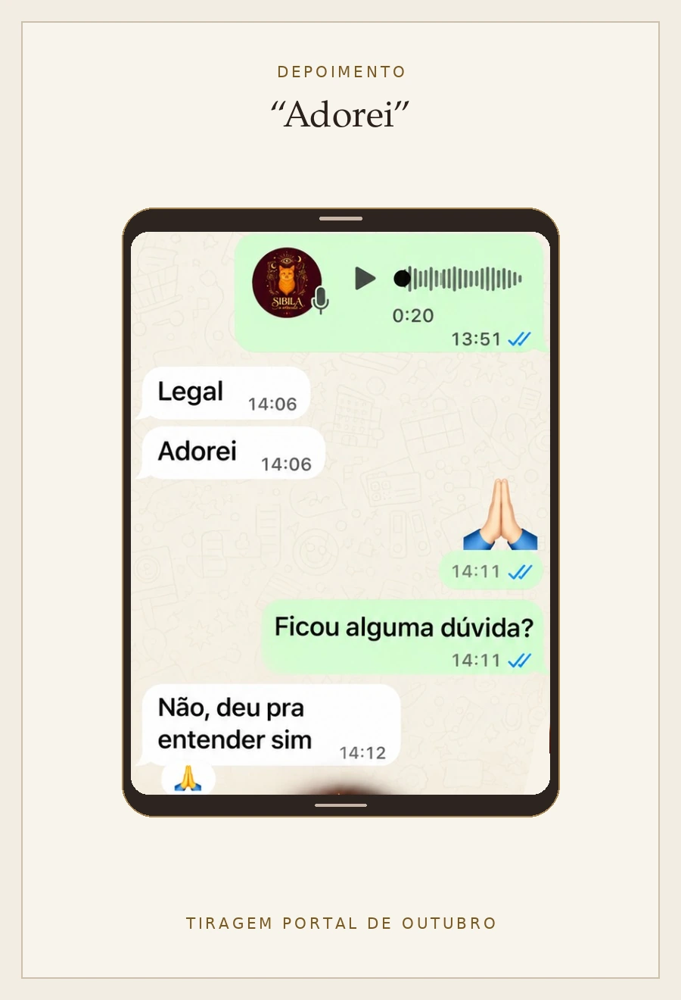
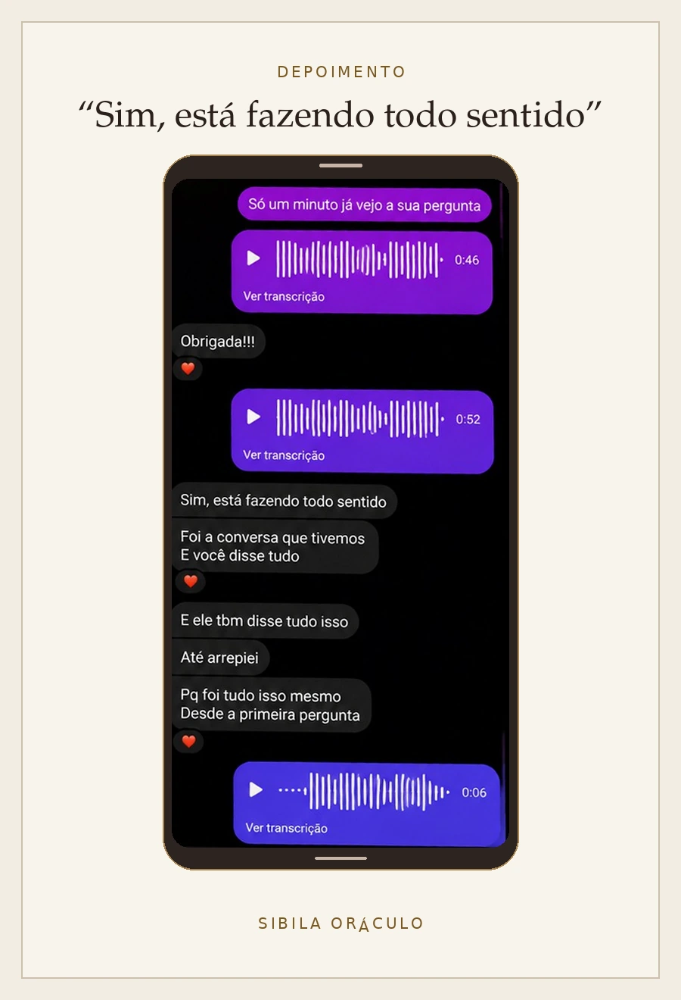
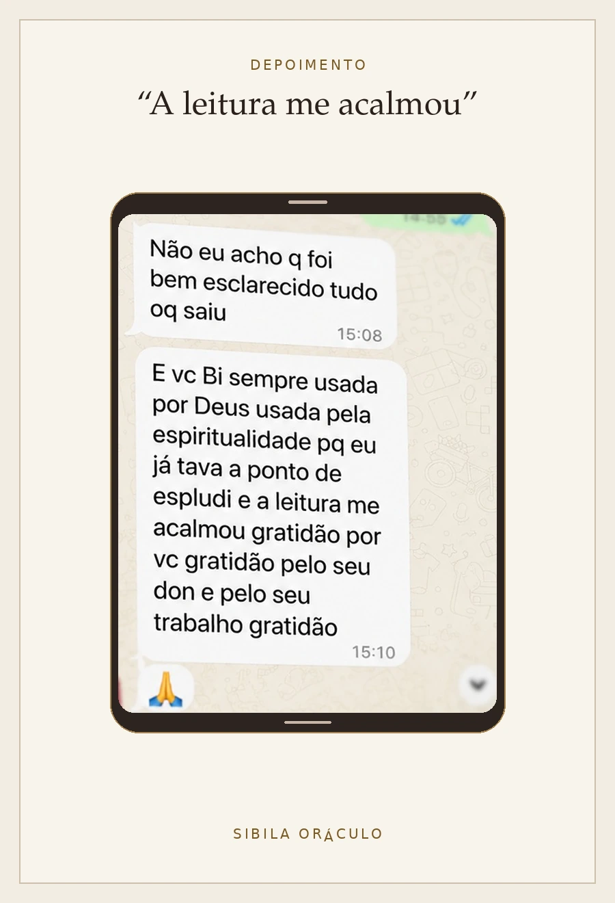

Mensagens reais de quem passou por uma consulta com a Sibila Oráculo.




Fez uma consulta? Conte como foi a sua experiência. Sua mensagem vai direto para o WhatsApp da taróloga e ajuda outras pessoas a encontrarem o seu caminho.
Cada palavra sua é recebida com gratidão.
Ao clicar, o WhatsApp abre com o seu feedback já escrito. É só tocar em enviar.